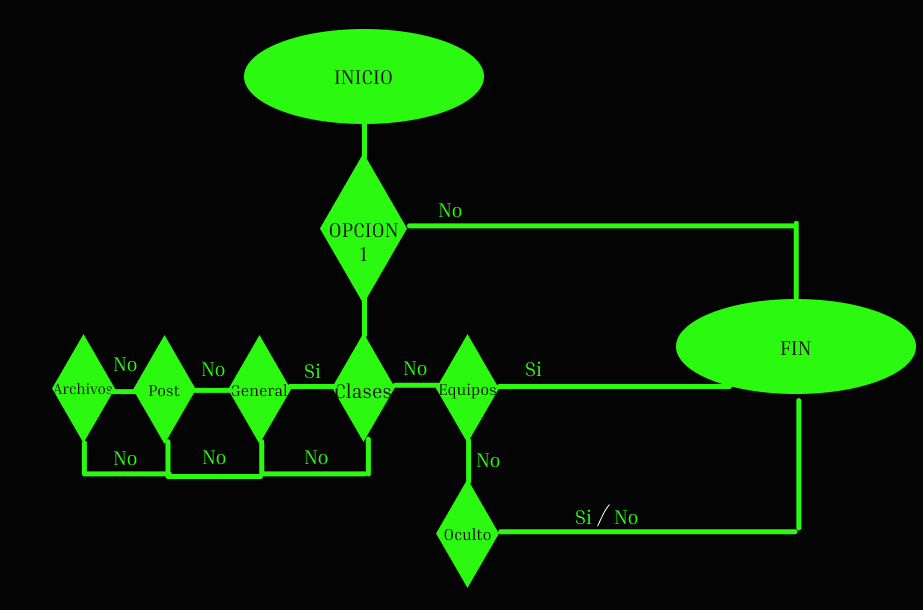

Lang sirve para saber en que idioma esta escrito el codigo de la pagina, es importante tener esto correcto ya que en los buscadores es para priorizar SEO
iframe nos permite agregar codigos ya elaborados por otros usuarios para agregar video, imagen, mapa o documento
En las opciones de codigo width & height nos permite cambiar su tamaño
Esta imagen es de las carpetas del archivo, usando la palabra img src = "../"
El DOOM es una interfaz que nos permite y ayuda a mantener una estructura ordenada para nuestro sitio HTML; manejar su estilo y sus contenidos; que esta dentro de que y que esta fuera de que, que nos lleva a que y que nos saca de que"
Diagrama de Flujo

Desarrollé un diagrama de flujo en pareja con uno de mis compañeros.